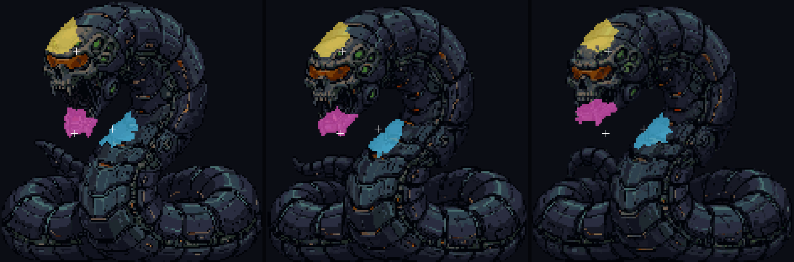

A fusão da Serpente: pescoço, queixo, crânio
28/10/2026 · ← os destroços dos inimigos · A spec: docs/superpowers/specs/2026-10-28-serpente-fusao-mordidas-design.md. Nada foi commitado.
Você: "na serpente grande da segunda fase dela, a estrela fica e quando o pedaço da cabeça sai, a estrela fica no meio disso tudo, causando um efeito estranho e mal acabado." E: "o pedaço da cabeça saindo é ótimo, mas numa luta isso já deixaria qualquer inimigo muito fraco, o que pode sair é outro tipo de pedaço: Queixo, pedaço do pescoço e, ai sim, aquele pedaço da cabeça."
As suas escolhas: três pedaços na ordem pescoço → queixo → crânio; carne e fluido misturados, sem fogo; a estrela sai só da fusão.
1. O que mudou
- A estrela sumiu da fusão. O ponto de acerto continua no crânio, do mesmo tamanho, só que sem o brilho. Nas formas de 3, 2 e 1 cabeça ela continua, porque lá diz qual cabeça leva dano.
- Os pedaços saem com 22%, 13% e 5% da vida total. Antes eram dois, ambos no crânio, a 15% e 6%.
- O gore: nada de bola de fogo, faísca de metal ou fumaça. O rasgo sai mais irregular. No rasgo, um jato de gotas: metade carne (vermelho-escuro quase preto), metade um fluido escuro e oleoso, com reflexo laranja nas cores das costuras dela. O pedaço pinga enquanto gira, e a ferida pinga até a morte.
2. Onde cada pedaço sai

3. Antes e depois, no jogo
Para você julgar: o quanto o rasgo é irregular e a quantidade de gotas (o jato, o pingo do pedaço, a ferida). Os dois números são ajustáveis.
4. A prova de que o resto ficou igual
| o quê | como | resultado |
|---|---|---|
| As formas de 3, 2 e 1 cabeça | A sonda roda a luta inteira duas vezes, uma com o código de antes e outra com o de agora, com a mesma sorte e o relógio a passos. Ela tira seis recortes da cabeça viva: no começo de cada forma e 1,5 s depois. | Os seis recortes saem idênticos pixel a pixel, com a estrela, as marcas dos tiros e o fundo |
| A fusão | A mesma sonda, com o código de agora | Três pedaços, todos na fusão: a 21,6%, 12,7% e 5%. Cada um começa no seu ponto (o pescoço a 4,5 px de arte, o queixo a 12, o crânio a 17). A estrela some em 100% dos quadros da fusão e fica em 100% dos das cabeças. Nenhuma folha de explosão nas mordidas (antes: 2). |
| Os outros chefões | _sonda-chefes (a Torre, o Guardião, o Predador, o golfinho) | Tudo como em 27/10 |
| A arte | test-morte: nos 9 quadros da fusão, uma mordida mirada em cada ponto | Sempre começa na parte certa, tem o tamanho exato (240 px) e é uma peça só, com o rasgo de antes e com o novo |
As ferramentas: scripts/_inimigos/_sonda-serpente-fusao.mjs, _filmar-serpente-fusao.mjs e _pontos-fusao.mjs.